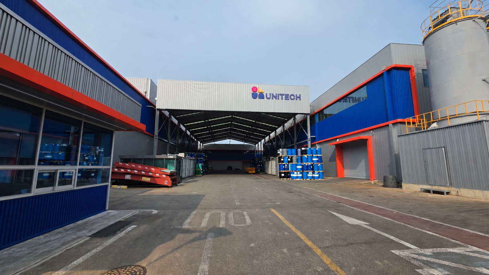

ABOUT SHINMYEONG
회사소개
자재 생산부터 납품, 직영 시공과 사후관리까지. 신명건설의 일하는 방식을 소개합니다.
COMPANY
주식회사신명건설은 자재 생산부터 납품, 현장 시공까지 원스톱으로 진행하는 외벽공사 전문회사입니다.
화성에 위치한 자체공장과 직영 실무팀을 기반으로, 고객님이 원하시는 디자인과 건물에 맞는 시공을 제안합니다.
칼라강판 옥상방수와 지붕공사, 리얼징크·루버강판·복합판넬·알루미늄 쉬트판넬 외벽까지 폭넓게 시공하며, 공사 후 5년 무상 A/S로 끝까지 책임집니다.

ONE-STOP CONSTRUCTION
자재를 만드는 공장에서,
건물을 완성하는 현장까지.
주식회사신명건설은 화성 자체공장에서의 자재 생산부터 납품, 현장 시공까지 하나의 흐름으로 진행합니다. 자재와 시공을 함께 검토해 건물의 용도와 상태에 맞는 외장 마감을 제안하고, 고객님이 원하시는 디자인을 현장에 구현합니다.
외주에 맡기지 않고 직영 실무팀이 직접 시공합니다. 외벽과 지붕의 마감부터 옥상방수, 천막까지 건축물의 다양한 고민을 함께 살피며, 시공 과정은 물론 공사 후 사후관리까지 책임 있게 이어갑니다.
OUR PROCESS
생산부터 시공까지, 연결된 책임.
- 01
자재 생산
화성 자체공장을 기반으로 시공에 필요한 자재를 생산합니다. 건물의 적용 부위와 원하시는 디자인을 함께 고려해 자재를 안내합니다.
- 02
자재 납품
현장에 필요한 자재와 규격, 수량을 확인하고 납품을 진행합니다. 시공 계획과 일정을 함께 협의해 다음 공정으로 이어갑니다.
- 03
직영 현장 시공
직영 실무팀이 현장에서 직접 시공합니다. 외장 디자인과 방수 마감을 함께 살피고, 공사 완료 후에도 사후관리를 이어갑니다.
OUR PROMISE
방수 책임 100%
공사 후 5년 무상 A/S
주식회사신명건설은 100% 방수를 책임진다는 약속으로 시공합니다. 공사 후 문제가 발생하면 100% 무상 A/S를 진행하며, 시공 완료 후 5년까지 사후관리를 제공합니다.
자재 생산부터 현장 시공, 공사 후 관리까지. 고객님의 건축물 고민을 해결하는 든든한 시공 파트너가 되겠습니다.
외벽·지붕·옥상방수·천막가 고민이라면 언제든 문의해 주세요. 현장 사진과 위치를 알려주시면 상담에 도움이 됩니다.
상담 010-7502-2856 ↗